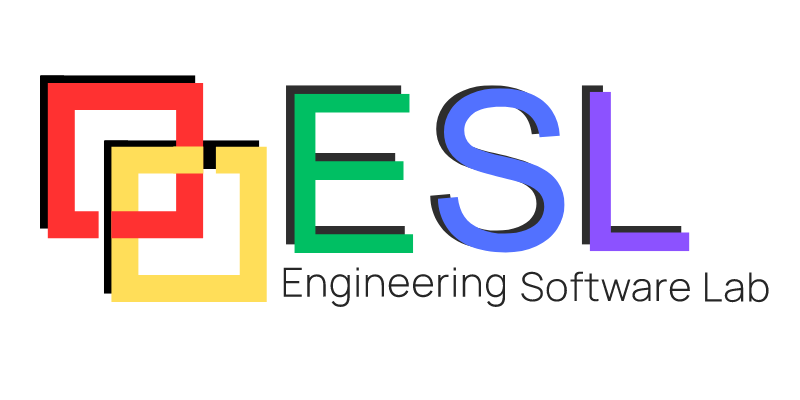

Claude Code Skills
vs. Amp Built-ins
What happens when a useful skill library becomes a 200-skill operating system—and why an integrated engineering workflow changes the equation.

Claude Code skills collected “just in case”
More choices create more ways
to choose wrong
Wrong skill
A plausible but mismatched workflow wins selection.
Missed skill
The best specialist guidance never enters context.
Skill pile-up
Multiple candidates add noise and competing rules.
Loading a skill has a context cost
What grows after loading
Illustrative direction—not measured benchmark values.
The compounding effect
Instructions can conflict.
Extensions can execute.
Conflict surface
Treat downloaded skills like extensions
- Review shell commands and hooks.
- Audit MCP servers and network access.
- Limit credential and filesystem permissions.
- Trust only reviewed, versioned sources.
Archive broadly.
Activate narrowly.
- Keep the global set small and curated.
- Enable project-specific skills only where needed.
- Disable automatic invocation for narrow workflows.
- Retire stale or overlapping instructions.
Common engineering work lives
inside the product
engineering core
One coherent workflow
Two architectures,
two optimization targets
Qualitative synthesis from the source comparison; bars communicate relative positioning, not measured scores.
Fewer moving parts.
More time on engineering.
Less prompt engineering
Common tasks do not need a custom instruction layer.
Consistent workflow
Capabilities share product-level context and conventions.
Lower maintenance
Fewer user-managed extensions to review and update.
Repository aware
Navigation, understanding, and editing work together.
Multi-file execution
Changes and verification stay in one engineering loop.
Reduced complexity
A smaller operational surface means fewer failure modes.
Specialized processes are
first-class differentiators
Regulated documentation
Encode organization-specific evidence and review flows.
SBOM workflows
Capture proprietary scanning, triage, and reporting logic.
MISRA / CERT C
Apply detailed safety and security compliance procedures.
Choose for the work
you actually do
General software engineering
Choose integrated codebase understanding, editing, and verification with less extension overhead.
Highly specialized operations
Choose maximum extensibility when custom regulatory or internal workflows justify the upkeep.
Amp
Optimizes for an integrated, lower-maintenance engineering workflow.
Claude Code
Optimizes for extensibility and organization-specific customization.
Skills, integration,
and the tradeoff
✳Why Too Many Claude Code Skills Can Be a Problem
- Harder for the agent to identify the correct skill.
- Greater chance of loading unnecessary or conflicting instructions.
- Increases context usage and token consumption once skills are activated.
- More maintenance as skills become outdated or overlap.
- Larger attack surface if third-party skills, hooks, or MCP servers are not carefully reviewed.
- Less predictable behavior due to interactions between independently developed skills.
›_Why Amp Has an Advantage
- Core software engineering workflows are built into the product.
- Requires significantly fewer custom skills and prompts.
- More consistent behavior with fewer conflicting instructions.
- Lower operational overhead and maintenance effort.
- Smaller context footprint, leaving more capacity for code and conversation.
- Easier to adopt and manage across engineering teams.
Key Takeaway
Amp's integrated design minimizes the need for a large skill ecosystem, resulting in simpler operation, lower maintenance, and more predictable behavior. Claude Code offers greater extensibility, but that flexibility comes with additional complexity as the number of custom skills grows.
Use Ampcode!
Thank you for listening.
›_ampcode.com